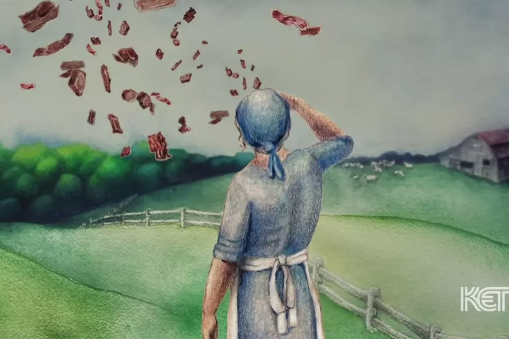
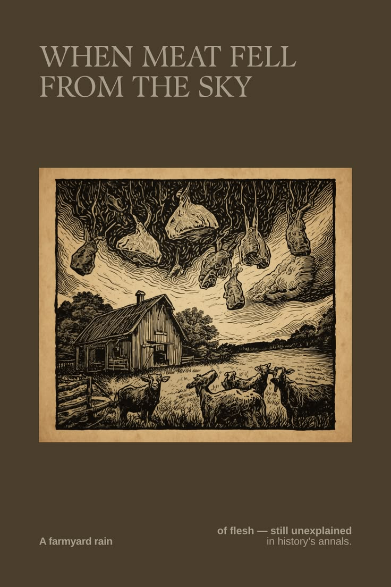

¿Qué sucedió?
El 3 de marzo de 1876, una mujer llamada Allen Crouch informó que habían caído fragmentos de una sustancia parecida a carne cerca de su propiedad. El extraño fenómeno ocurrió en una zona rural de Kentucky, Estados Unidos, y fue conocido como la “lluvia de carne de Kentucky”. La noticia llamó la atención de la prensa y provocó diversas investigaciones para intentar descubrir el origen de los restos.
El 3 de marzo de 1876, una mujer llamada Allen Crouch informó que habían caído fragmentos de una sustancia parecida a carne cerca de su propiedad. El extraño fenómeno ocurrió en una zona rural de Kentucky, Estados Unidos, y fue conocido como la “lluvia de carne de Kentucky”. La noticia llamó la atención de la prensa y provocó diversas investigaciones para intentar descubrir el origen de los restos.

Lo que está documentado
El periódico The New York Times publicó una noticia sobre el fenómeno el 9 de marzo de 1876. Los relatos de la época describieron fragmentos de una sustancia que parecía carne y que quedaron esparcidos por el terreno. Algunas muestras fueron examinadas y se propusieron distintas explicaciones sobre su composición. Una de las hipótesis más conocidas sostiene que los restos pudieron ser regurgitados por buitres mientras volaban.
Lo que aún no se sabe
No se ha determinado con certeza el origen de todos los fragmentos ni cómo llegaron al suelo. Tampoco se sabe si todos procedían de una misma fuente. La explicación de los buitres es una hipótesis posible, pero no existe evidencia concluyente que permita confirmar que esa fue la causa exacta del fenómeno.
